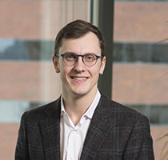

<div class="container">
    <div class="row">
        <div id="speaker-detail" class="col-lg-6 col-lg-offset-3">
            <div class="row">
                <button title="Close (Esc)" type="button" class="mfp-close">×</button>
                <div class="col-md-4 col-lg-4">
                    
                    <br />
                </div>
                <div class="col-md-8 col-lg-8">
                    <h2>Michael Mee</h2>
                    <h3>Associate, Flagship VentureLabs</h3>
                    <p>Michael joined Flagship in 2015 after completing the VentureLabs® Fellows program. At Flagship, Michael works with VentureLabs partners as part of a venture-creation team, conducting explorations into innovative ideas and promising technologies. He develops the science, intellectual property, and business strategy that form the foundation of breakthrough startups. Before joining Flagship, he completed his doctorate in biomedical engineering at Boston University. As part of his doctorate, Michael worked in the lab of Professor George Church at Harvard Medical School, where he used genome editing technologies to engineer microbial ecosystems and their metabolic exchange networks. His work resulted in multiple academic publications, including an article in the journal Nature.</p>
                    <p>While in graduate school Michael co-founded a company to modulate the livestock microbiome to improve feed conversion, an effort that was incubated at Harvard iLabs. He was also deeply involved in the Boston scientific community as an organizer of the Boston Bacterial Meeting. His graduate work was supported by a scholarships from the Natural Sciences and Engineering Research Council of Canada and the Canadian Institutes of Health Research.</p>
                    <p>Michael graduated from McGill University in 2009 with a bachelor’s degree in engineering. In the Department of Bioresource Engineering, he applied engineering principles to research on microbial fuel cells, with a goal of enhancing the sustainability of global natural resources. While at McGill, Michael competed internationally on the Canadian National Team in Ice Dancing.</p>
                </div>
            </div>
        </div>
    </div>
